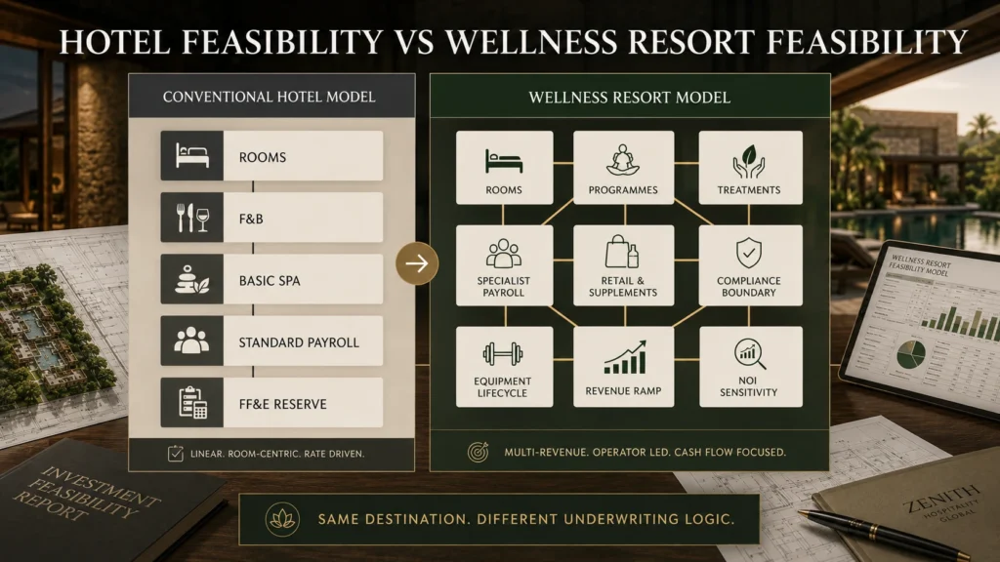
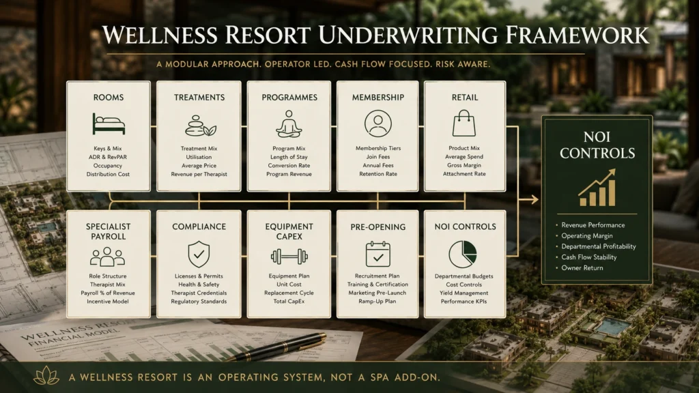
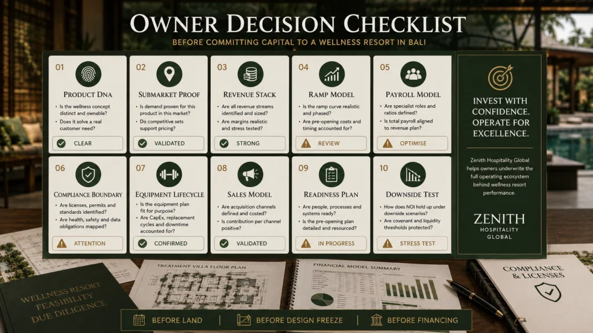

The weakest wellness resort feasibility in Bali models rarely fail because the spa menu is unattractive. They fail because the owner treats wellness as an ADR premium and a spa revenue line, not as a separate operating system with its own ramp, payroll, compliance, equipment lifecycle, and conversion risk.
For owners, investors, developers, operators, asset managers, and family offices, the question is not whether wellness demand exists. It does. The real question is whether a specific Bali wellness resort can convert that demand into stable NOI.
This article is not written for tourists. It is an owner-side wellness resort feasibility in Bali framework for deciding whether a Bali wellness resort, longevity retreat, medical wellness resort, or wellness-led boutique hospitality project can become a financeable operating asset.
Key Takeaways
- A Bali wellness resort cannot be underwritten like a conventional hotel with a spa attached. Wellness revenue, payroll, compliance, equipment, and guest conversion need separate assumptions.
- Bali is not one RevPAR market. Ubud, Jimbaran & Uluwatu, and Canggu & Tabanan show materially different hotel performance outcomes, so one island-wide ADR assumption is weak underwriting.
- Wellness demand does not equal wellness NOI. Global wellness tourism is growing, but property-level performance depends on capture rate, programme quality, practitioner credibility, utilization, repeat behaviour, staffing, and sales execution.
- Medicalized wellness changes the risk profile. If the model includes diagnostics, IV therapy, physician services, hyperbaric treatment, or clinical-grade devices, feasibility must include licensing, entity structure, device approval, maintenance, and clinical governance.
- The investor test is simple: if the model fails when wellness revenue ramps slower than rooms, specialist payroll is built role-by-role, and clinical equipment is separated from hotel FF&E, the project is not yet investment-ready.
Why Wellness Resort Feasibility in Bali Matters Now
Wellness tourism is no longer a marginal hospitality category. The Global Wellness Institute reported that wellness tourism reached US$893.9 billion in 2024 and projected 9.1% annual growth from 2024 to 2029.
That creates real investor interest in Bali wellness resorts, longevity retreats, recovery-led boutique hotels, medical wellness projects, and destination wellbeing concepts.
But macro demand does not validate a Bali project by itself.
Bali remains a deep hospitality market, but it is also increasingly competitive and submarket-specific. The Horwath HTL / C9 Hotelworks 2026 Bali Hotel & Branded Residences report reported an active Bali hotel pipeline of 5,641 rooms across 45 hotels, with major concentration in Canggu, Jimbaran & Uluwatu, and Ubud.
Those are also the corridors where premium wellness, lifestyle, villa, retreat, and branded-residence concepts are likely to cluster.
Zenith’s view is straightforward: the investment question is not whether wellness is popular. The investment question is whether the site, concept, service model, staffing plan, licensing path, and ramp-up strategy can convert wellness demand into durable operating profit.
For related thinking on assumption risk, see Zenith’s article on why a hotel feasibility study is wrong when ADR and occupancy are treated as fixed certainties. That same discipline applies directly to wellness resort feasibility in Bali, where the assumptions are usually more complex than a standard hotel model.
The Core Problem in Wellness Resort Feasibility in Bali
A wellness resort feasibility model fails when it treats wellness as a decorative revenue layer.
In a true wellness resort, wellness is not an amenity. It is part of the commercial engine.
That means the model must separately underwrite:
- wellness programme revenue;
- specialist payroll;
- treatment-room utilization;
- therapist utilization;
- retail attach rate;
- compliance cost;
- clinical or medical boundary;
- equipment lifecycle;
- pre-opening ramp;
- sales conversion.
HVS notes that in true wellness resorts, spa and holistic wellbeing services can account for 30 - 50% of total revenue, compared with 7 - 10% at standard luxury hotels. See the HVS article on why wellness resorts offer healthy investment opportunities.
That changes the feasibility question.
A conventional resort may be underwritten mainly through rooms, F&B, and a modest spa department. A wellness resort is different. The investor is funding an operating system: practitioners, assessments, programmes, retreat packages, recovery infrastructure, treatment rooms, retail, protocols, guest education, partnerships, and recurring demand.
If the model does not separate those lines, it cannot show where value is created or where risk is hidden.
What Bali Market Data Supports for Wellness Resort Feasibility in Bali
Bali supports premium hospitality, but not one generic “Bali luxury wellness” assumption.
The Horwath HTL / C9 Hotelworks report shows materially different 2025 outcomes by submarket:
| Bali Submarket | Occupancy | ADR | RevPAR | Underwriting Implication |
|---|---|---|---|---|
| Ubud | 68.6% | IDR 3.6 million | IDR 2.5 million | Strong wellness association, but not automatic full-year stabilization. |
| Jimbaran & Uluwatu | 66.0% | IDR 4.8 million | IDR 3.1 million | Higher coastal luxury rate potential, but concept and site quality must justify the premium. |
| Canggu & Tabanan | 60.0% | IDR 2.2 million | IDR 1.3 million | Lifestyle demand exists, but competition and rate pressure require disciplined assumptions. |
A wellness resort in Ubud, Uluwatu, Canggu, Tabanan, Sanur, Seseh, Pererenan, or inland Bali should not begin with an aspirational ADR. It should begin with a submarket comp set.
The model should ask:
- Which submarket is the asset really competing in?
- Is the guest coming for a room, a retreat, a recovery programme, a medical wellness protocol, or a lifestyle stay?
- Does the site support the length of stay required for the wellness concept?
- Can the wellness offer create incremental spend, or is it mainly marketing language?
- What happens if ADR is 15 - 20% below the pitch-deck assumption?
Seasonality is also material. Horwath shows July and August 2025 as Bali’s strongest RevPAR months, while February was materially weaker.
The official BPS Bali March 2026 tourism release recorded Bali star-rated hotel occupancy at 52.54% in March 2026, down from 55.44% in February 2026.
That matters for feasibility.
A flat annual revenue curve is not underwriting Bali. It is smoothing Bali into something less risky than the market actually is.
Length of Stay Is a Wellness Revenue Issue
Wellness revenue is not only about occupancy. It is about time available to convert the guest.
Horwath reported average stay of 2.5 days in Ubud and 2.4 days in Canggu & Tabanan.
That matters.
A two-night guest may buy a massage, sauna session, recovery add-on, or smoothie. But the same guest is less likely to complete a proper multi-day metabolic reset, burnout recovery programme, diagnostics-led protocol, behavioural coaching journey, or practitioner-led wellness package unless the concept is deliberately designed, sold, and scheduled before arrival.
For investors, this creates a major underwriting distinction:
| Guest Behaviour | Feasibility Meaning |
|---|---|
| Guest books a room and buys one treatment casually | Spa department logic |
| Guest books a package before arrival | Wellness resort logic |
| Guest returns monthly or annually | Membership / repeat wellness logic |
| Guest enters a doctor-led diagnostic or treatment protocol | Medical wellness / regulated service logic |
A model that assumes every wellness guest behaves like a retreat participant from day one is usually too aggressive.
For deeper context on wellness-led hospitality investment, see Zenith’s article on biohacking wellness investment in Bali.
What Most Owners Get Wrong in Wellness Resort Feasibility in Bali
1. They assume wellness creates an automatic ADR premium
A wellness concept may support premium pricing, but only if the product is specific, credible, and defensible.
“Wellness” as a word does not justify a rate premium.
The model must show what the guest is paying for:
- location and setting;
- practitioner credibility;
- programme depth;
- diagnostics or assessments;
- recovery infrastructure;
- food and nutrition logic;
- length-of-stay design;
- brand trust;
- pre-arrival sales capability;
- operator execution.
Without that proof, the ADR premium is an assumption, not a business case.
2. They stabilize wellness revenue too early
Room demand and wellness programme demand do not normally stabilize on the same curve.
The Horwath HTL Spa Profitability Handbook identifies guest capture rate, referral programmes, local advertising, memberships, retention, upselling, treatment-room utilization, and therapist utilization as key profitability drivers.
Successful spas typically target 40 - 60% treatment-room utilization and therapist utilization above 75%.
Those are operating achievements, not opening-day assumptions.
Zenith would normally model wellness programme revenue on a slower ramp than rooms, especially where revenue depends on referrals, packages, practitioners, memberships, diagnostics, or repeat local demand.
An 18 - 24 month ramp may be prudent for many concepts, but it should be presented as a project-specific underwriting assumption. It should not be presented as a universal public Bali benchmark.
3. They price specialist payroll like hotel payroll
Bali’s 2026 sectoral minimum wage for accommodation and food and beverage hotel businesses is IDR 3,267,693 per month. Badung’s sectoral wage for 4-star and 5-star hotels is IDR 3,828,912.60. These figures are stated in the official Bali wage documentation published by the provincial manpower authority.
Those figures are compliance baselines. They are not a realistic staffing proxy for a wellness resort with nutritionists, physiotherapists, psychologists, nurses, doctors, movement specialists, recovery coaches, yoga therapists, diagnostics coordinators, or clinical partners.
HVS spa department research found expense ratios averaging just above 77% of spa revenue, with labour typically the largest expense category. See the HVS Spa Department Performance Report.
Zenith’s position is that specialist payroll should be built role-by-role.
Any shortcut that applies a generic hotel payroll percentage to a wellness resort is structurally weak.
This also connects to broader wage and employment governance. Zenith has covered related operating risks in its article on Indonesia hotel labour law compliance in 2026.
4. They treat retail and supplements as passive revenue
Retail and supplements are often presented as easy upside. They are not.
Retail depends on practitioner trust, product relevance, staff product knowledge, guest profiling, inventory management, and compliant marketing.
Horwath identifies retail revenue, product partnerships, upselling, and cross-selling as spa profitability levers. But those levers require active management.
In Indonesia, supplements and cosmetics are not just merchandising lines. BPOM regulates health supplement registration under BPOM Regulation No. 32 of 2022, and cosmetics labeling, promotion, and advertising under BPOM Regulation No. 18 of 2024.
The commercial implication is clear.
Retail and supplements should be modelled conservatively until there is evidence of attach rate, compliance pathway, stock turn, practitioner recommendation behaviour, and repeat purchase.

5. They hide clinical equipment inside generic hotel FF&E
A medically ambitious wellness resort may include devices and infrastructure that do not behave like hotel furniture, fixtures, and equipment.
Examples include:
- hyperbaric oxygen chambers;
- diagnostic equipment;
- recovery technology;
- cold and heat therapy infrastructure;
- body composition equipment;
- medical-grade devices;
- software-driven assessment tools;
- specialized treatment equipment.
Indonesia requires medical devices distributed in the country to have a product license to ensure safety, quality, efficacy, or performance. The Ministry of Health provides guidance through its medical-device product licensing framework.
IAS 16 also requires property, plant, and equipment to be recognized at cost, including purchase price, import duties, non-refundable taxes, and directly attributable costs. See the IFRS page for IAS 16 Property, Plant and Equipment.
Zenith’s interpretation is simple: wellness and clinical-grade equipment should have a separate CapEx schedule, maintenance plan, calibration budget, service contract, consumables forecast, software refresh logic, and replacement reserve.
Burying it inside a generic hotel FF&E reserve hides risk from the owner.
The Zenith View: Wellness Resort Feasibility in Bali Must Underwrite the Operating System
A serious Bali wellness resort feasibility model should not begin with the sentence, “Wellness is growing.”
It should begin with sharper owner-side questions:
- What exact guest problem does this asset solve?
- Which submarket performance data supports the room model?
- What wellness revenue lines exist beyond rooms?
- How will those revenue lines ramp by month?
- Who delivers the programme, and what do they cost?
- What is regulated, and what is non-regulated?
- Which equipment requires separate lifecycle modelling?
- What happens if ancillary capture is delayed by 12 months?
- What happens if specialist payroll is 20% higher than planned?
- What happens if licensing delays the launch of medicalized services?
Zenith’s operator-first view is that wellness resort feasibility in Bali must connect Product DNA, market data, guest journey, operating model, commercial model, compliance, CapEx, and pre-opening governance.
A beautiful concept can still be financially weak. A strong feasibility model must show how the concept becomes sellable, staffable, compliant, operable, measurable, and profitable.
This is why a strong hotel Product DNA should be completed before major design or CapEx decisions are locked.

A Wellness Resort Feasibility in Bali Framework for Owners
A real wellness resort model should be modular.
| Module | What to Model Separately | Why It Matters |
|---|---|---|
| Rooms | Occupancy, ADR, RevPAR, seasonality, length of stay, channel mix | Prevents unsupported ADR premiums and flat annual revenue curves. |
| Wellness treatments | Treatment mix, treatment-room utilization, therapist utilization, capture rate | Shows whether facilities are monetized or just built. |
| Programmes / packages | Retreats, recovery protocols, diagnostics-led packages, length of stay | Separates spa spend from wellness resort revenue. |
| Membership / local demand | Day passes, resident memberships, recurring visits, referrals | Tests whether demand exists beyond hotel guests. |
| Retail / supplements | Attach rate, stock turn, margin, BPOM compliance, staff recommendation behaviour | Prevents passive ancillary revenue assumptions. |
| Specialist payroll | Therapists, nutritionists, movement, psychology, nursing, doctors, clinical partners | Prevents hotel wage floors from distorting the model. |
| Clinical / medical layer | KBLI structure, licensed entity, medical partner, permits, liability, clinical governance | Protects against illegal or unfinanceable operating promises. |
| Equipment CapEx | Device cost, import/duty/tax, installation, licensing, service, calibration, consumables, replacement | Prevents medical and wellness equipment from disappearing into hotel FF&E. |
| Pre-opening governance | Recruitment, training, SOPs, protocols, packages, sales calendar, readiness gates | Converts concept into operational reality. |
| Commercial controls | Monthly ramp, sensitivity cases, KPI dashboard, NOI bridge, payback logic | Shows whether the investment case survives downside scenarios. |
This is also why wellness resort feasibility in Bali should be integrated with pre-opening strategy, not handed over to operations after design completion.
Operational Implications for Wellness Resort Feasibility in Bali
A wellness resort requires different operating preparation from a standard resort.
The programme must be designed before the building is finalized
Treatment rooms, recovery zones, assessment rooms, movement studios, consultation spaces, thermal areas, nutrition spaces, and retail points must be designed around actual service logic.
If the architect designs “wellness spaces” before the operating programme is defined, the owner may end up with beautiful rooms that do not support throughput, privacy, staffing, licensing, or sales conversion.
Staffing must be built from the service model
The staffing plan should not start with hotel headcount ratios.
It should start with:
- service menu;
- programme duration;
- expected utilization;
- opening hours;
- peak demand periods;
- required qualifications;
- supervision structure;
- training burden;
- clinical boundary;
- partner or contractor logic.
Sales must begin before arrival
Wellness revenue is easier to capture when the guest understands the offer before arriving.
The pre-arrival journey should include:
- package education;
- intake forms where relevant;
- practitioner positioning;
- treatment recommendations;
- booking prompts;
- upgrade logic;
- programme pathways;
- retail follow-up.
If the guest first hears about the wellness programme at check-in, the resort is already late.
Compliance must be designed into the operating model
The distinction between spa, wellness, recovery, diagnostics, medical consultation, device-based treatment, and clinic activity matters.
OSS separates tourism spa activity under KBLI 96122 from private clinic activity under KBLI 86105. The OSS description for KBLI 96122 also states that tourism spa activity excludes medical spa activity.
A feasibility model should therefore include a compliance map before revenues from medicalized services are accepted into the base case.
Utilization must be managed daily
A wellness resort should track more than occupancy and ADR.
It should track:
- treatment-room utilization;
- therapist utilization;
- capture rate from in-house guests;
- pre-arrival package conversion;
- repeat guest rate;
- local member usage;
- retail attach rate;
- practitioner productivity;
- programme margin;
- equipment downtime;
- referral conversion;
- NOI by revenue module.
Without these controls, wellness resort feasibility in Bali becomes a narrative rather than a managed business.
Commercial Implications for Wellness Resort Feasibility in Bali
ADR premiums must be earned, not assumed
A wellness resort can command a premium only when the product has defensible value.
A guest may pay more for a credible programme, a rare site, a trusted practitioner network, a strong recovery proposition, or a clear transformation outcome.
The guest will not pay materially more because the deck uses the word “longevity.”
For wider context on this category, see Zenith’s article on longevity tourism development in Indonesia.
Wellness revenue should not stabilize with rooms
Rooms can ramp through distribution, pricing, and occupancy growth.
Wellness programmes require trust, education, scheduling, practitioner credibility, referrals, reviews, pre-arrival conversion, and repeat behaviour.
That means the model should include at least three cases:
| Case | Rooms | Wellness Revenue | Investor Use |
|---|---|---|---|
| Conservative | Comp-set anchored, no early ADR premium | Slow ramp, low capture, low retail | Downside protection |
| Base | Moderate premium justified by product and submarket | Gradual ramp as conversion improves | Investment decision case |
| Upside | Strong ADR and package conversion | Faster capture, repeat demand, stronger retail | Not used as financing base case |
Payroll can erase the wellness premium
If wellness revenue is overestimated and specialist payroll is underestimated, NOI collapses from both sides.
The owner is hit by:
- lower-than-planned treatment and package revenue;
- higher staff cost;
- lower productivity during opening ramp;
- training and recruitment friction;
- underused treatment rooms;
- higher management complexity.
Medicalized wellness changes the capital stack
Clinical or device-dependent wellness is not only a marketing choice. It affects:
- CapEx;
- licensing;
- insurance;
- liability;
- staff qualifications;
- procurement;
- maintenance;
- calibration;
- operating protocols;
- partner structure;
- revenue recognition timing.
If a medicalized revenue line cannot launch legally or operationally on time, it should not sit in the opening-year base case.
What To Do Before Committing Capital to a Wellness Resort in Bali
Before approving land acquisition, design development, financing, operator search, or major CapEx, an owner should complete the following review.
| Gate | Owner Question | Required Output |
|---|---|---|
| 1. Product DNA | What exact wellness promise are we underwriting? | Guest profile, promise, positioning, programme logic |
| 2. Submarket proof | Which Bali comp set supports the room assumptions? | Occupancy, ADR, RevPAR, seasonality, LOS benchmark |
| 3. Revenue stack | What revenue exists beyond rooms? | Rooms, treatments, packages, membership, retail, F&B, diagnostics if applicable |
| 4. Ramp model | Which revenue lines ramp slower than rooms? | Monthly 24-month ramp with conservative, base, and upside cases |
| 5. Payroll model | Who delivers the wellness promise? | Role-by-role staffing, productivity, on-costs, contractor / partner logic |
| 6. Compliance boundary | What is wellness, and what is medical? | KBLI, entity, permit, clinical partner, liability map |
| 7. Equipment lifecycle | What equipment requires separate modelling? | CapEx, import/tax, maintenance, calibration, service, replacement |
| 8. Sales model | How will the guest buy before and during the stay? | Pre-arrival sales flow, packages, upsell, local demand, CRM |
| 9. Readiness plan | What must be ready before opening? | SOPs, training, recruitment, pricing, partner contracts, test operations |
| 10. Downside test | Does the project survive slower capture and higher payroll? | Sensitivity model, NOI bridge, investment decision note |
A project that cannot pass these gates should not move straight into design freeze or operator negotiations.

FAQ
Is Bali still attractive for wellness resort investment?
Yes, Bali remains attractive for wellness resort investment, but attractiveness is not the same as feasibility. Global wellness tourism is growing, and Bali has strong international demand, brand recognition, and wellness association. The risk is that owners mistake category growth for project-level proof. A Bali wellness resort still needs submarket RevPAR validation, a clear guest promise, credible programming, realistic payroll, compliant operations, and a disciplined ramp model before capital is committed.
What should wellness resort feasibility in Bali include?
Wellness resort feasibility in Bali should include more than room occupancy, ADR, and a spa revenue line. A serious model should test submarket RevPAR, seasonality, length of stay, wellness programme ramp, treatment-room utilization, specialist payroll, retail attach rate, compliance boundary, clinical equipment lifecycle, pre-opening readiness, and downside scenarios. Without these elements, the model may describe a concept but not prove an investable operating asset.
Can a Bali wellness resort justify a higher ADR?
A Bali wellness resort can justify a higher ADR only if the premium is supported by site quality, concept clarity, guest demand, programme credibility, distribution, service execution, and a defensible operating model. “Wellness” alone is not enough. The feasibility model should first anchor rooms to the relevant submarket comp set, then test any premium separately. If the model only works with top-of-market ADR from opening, the investment case is fragile.
Should wellness revenue ramp at the same speed as room revenue?
Usually no. Room revenue can build through distribution, pricing, and occupancy, while wellness revenue depends on capture rate, trust, education, practitioner credibility, referrals, treatment utilization, and repeat behaviour. For many Bali projects, it is safer to model wellness revenue on a slower ramp than rooms. An 18 - 24 month ramp may be prudent in some cases, but it should be labelled as a project-specific underwriting assumption rather than a universal public Bali benchmark.
What is the biggest operating risk in a Bali wellness resort model?
The biggest operating risk is usually the gap between the wellness promise and the operating system required to deliver it. A pitch deck may show treatments, rituals, diagnostics, recovery devices, and lifestyle programming, but the model often lacks the staff, training, SOPs, compliance structure, pre-arrival sales flow, utilization targets, and equipment lifecycle budget needed to make those services profitable. That gap is where NOI risk appears.
When does a wellness resort become a regulated medical or clinical project in Indonesia?
A wellness resort enters a more regulated area when it moves from hospitality and non-medical wellness into services such as diagnostics, physician consultations, IV therapy, clinical treatment, hyperbaric services, or medical-device-dependent protocols. OSS separates tourism spa activity under KBLI 96122 from private clinic activity under KBLI 86105. Final structuring should be confirmed with Indonesian legal, licensing, and clinical advisors before those revenues are included in the base case.
How should investors model retail and supplements?
Retail and supplements should be modelled conservatively until the operator proves attach rate, practitioner recommendation behaviour, inventory control, margin, compliance, and repeat purchase. They should not be treated as passive ancillary revenue. In Indonesia, supplements and cosmetics are regulated by BPOM, including registration, labeling, promotion, and advertising requirements. A serious model should include product compliance, working capital, staff training, and realistic stock-turn assumptions.
Where does Zenith add value before capital is committed?
Zenith helps owners translate a wellness idea into an investable operating model. That means testing the Product DNA, submarket RevPAR logic, guest journey, wellness revenue stack, staffing plan, pre-opening requirements, clinical / non-clinical boundary, CapEx lifecycle, and downside scenarios. The value is not only in saying whether the concept sounds attractive. The value is in showing whether it can operate, sell, comply, stabilize, and support the owner’s investment objectives.
Summary Takeaways
Wellness resort feasibility in Bali must be built from market evidence, not wellness optimism.
A conventional hotel model is not enough when wellness becomes a major revenue engine. Submarket RevPAR, seasonality, and length of stay must anchor the room model. Wellness programme revenue should be ramped separately from room revenue. Specialist payroll should be modelled role-by-role. Retail, supplements, diagnostics, and medicalized services require compliance review. Clinical-grade equipment needs its own lifecycle budget and operating plan.
A financeable project should survive conservative assumptions before design, financing, or operator negotiations proceed.
CTA
Before committing capital to a wellness resort in Bali, commission a Zenith wellness resort feasibility in Bali and operating model review.
Zenith Hospitality Global helps owners, developers, investors, and operators test the investment case across the areas that usually decide whether a wellness project becomes a real asset or remains a persuasive pitch deck: submarket RevPAR, Product DNA, wellness revenue ramp, specialist payroll, compliance boundary, clinical equipment lifecycle, pre-opening governance, and owner-side NOI risk.
Start a conversation